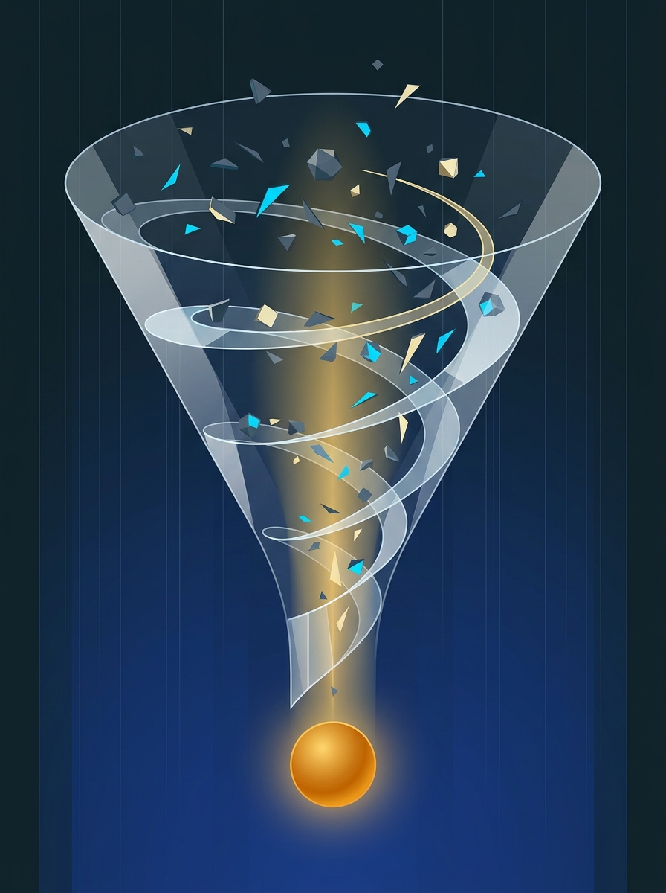

追問到根，自由選擇：50 個生活問題的第一性原理重新拆解
原著：品成心理 ｜ 微信讀書出品（2026-10-14）
把複雜的生活困擾一層層剝開，把真正的需求一點點看清，從表層慣性取回人生選擇權。

全書以「四步追問法」為總引擎，由內而外重新校準 7 大人生維度的 50 個底層定義
破除「向來如此」的類比惰性：SpaceX 看穿原料僅 2% 實現單位發射成本降 92%
類比思維 vs. 第一性原理
- 類比思維：看見別人賣千萬美元就認定火箭本來這麼貴，只能在價格與細節微調打轉。
- 第一性原理：砍掉中間商並回收佔整枚約 3/4 價格的一級火箭，透過複用攤薄固定成本。
三大哲學思想源流匯聚
- 亞里士多德：系統中存在無法由其他命題推導、不可違背或刪除的最基本前提。
- 蘇格拉底（助產術）：不給現成答案，用連續追問逼出對方自己想明白的本質。
- 《大學》：「物有本末，事有終始，知所先後，則近道矣。」
高能量自我秩序不靠咬牙硬扛，而在設計習慣、隔離誘惑、接納情緒與不自欺
| 議題 | 第一性原理（是 X） | 常見誤區（不是 Y） | 關鍵實證與東西方印證 | 立即可用最小行動 |
|---|---|---|---|---|
| #1 自律 | 習慣（低能耗重複） | 意志力硬撐 | 鮑邁斯特自我損耗實驗；村上春樹四點起床不用鬧鐘之數十年固定作息 | 目標拆成飯後 5 個俯臥撐，固定時間做滿 1 個月 |
| #2 成長 | 反思（提煉養分） | 堆疊經歷 | 杜威：不從經驗學，從對經驗的反思學；曾子吾日三省；王陽明事上磨鍊 | 每件事後記一句：這件事教會我什麼？贏在運氣或實力？ |
| #3 專注 | 放棄（排除選項） | 在誘惑旁剋制 | 逐二兔不得一兔；喬布斯回蘋果大砍 300 多型號至 10 個，決定不做更重要 | 手機移出房間關通知，只保留眼前唯一要事 |
| #4 情緒管理 | 接納（疏導出口） | 壓制控制 | 韋格納白熊實驗（越禁想越想）；大禹治水疏導勝鯀堵水；接納承諾療法 ACT | 先為狀態命名（「我現在很生氣」），讓情緒自然流出 |
| #5 興趣 | 內在驅動（樂之者） | 短暫喜歡 | 德西實驗（中途給錢又撤錢，熱情反低於未領錢組）；孔子好之不如樂之者 | 自問：無人點贊也無報酬時，我還願投入精力嗎？ |
| #6 慎獨 | 不自欺（對己誠實） | 人後硬守規矩 | 《大學》毋自欺；東漢楊震「天知地知你知我知」拒深夜送金 | 獨處時自問：沒人看見我還這樣做嗎？不開第一個口子 |
用「最小實體行動」切斷大腦 DMN 空轉，分清可控與不可控獲得真鬆弛
#7 中庸是恰到好處，不是平庸
開會不表態推說「性格內向」是逃責的平庸；真中庸是「過猶不及」與亞里士多德黃金中道——在說話速度、情緒強弱上拿捏精準分寸感。
#9 自我價值是內在確認，不是外在認可
他人嘴巴隨情緒起落；落實阿德勒「課題分離」與孔子「人不知而不慍」。列出 3 件自己做過但無人知曉的好事，拿回自我定價權。
#11 無為是不妄為，不是無所作為
「無」是不要而非沒有。反對宋人拔苗助長式瞎用力；如老子「治大國若烹小鮮」與亞當·斯密「看不見的手」，看清事物規律後順勢而行。
資料不變、框架一換結論全變：以目的篩選項、以 24H 最小應用打通「知行一體」
#13 祛魅是看清真實，不是全盤否定
偶像或伴侶濾鏡碎裂後破口大罵，只是從「美化」掉入另一種「貶低」。依韋伯與荀子《解蔽》，去掉幻想看清真實本相仍願愛它，才是成熟底氣。
#16 決策是目的，不是選項優缺點表
選項本身沒有答案。先依《大學》「知止而後有定」寫清當下唯一核心目的（金錢/成長/穩定），再像巴菲特「20 孔打孔卡」一樣按標準一秒篩掉不符選項。
#19 教育是培養能力，不是分數高低
分數只抽樣「記憶與熟練」，抽不出解決無考綱問題的本事（《學記》記問之學不足為師；懷特海：掌握運用知識的藝術）。減半刷題時間做無標準答案實作。
沒有功勞的苦勞不值錢：以價值交付、複利疊代與反脆弱槓鈴驅動事業躍遷
#20 職場＝價值交付（非苦勞）
誤區：把工時與抄送郵件當成果。
本質：德魯克指出「成果全在組織外部」。每天自問從「忙不忙」改為「交出了什麼對客戶/同事有用的成果」。
#21 長期主義＝複利（非熬時間）
誤區：把 1 年經驗重複用 10 年。
本質：站在昨天肩膀疊加（1.01³⁶⁵≈37倍）；像巴菲特找「溼雪長坡」與貝索斯再投資，每天留下一點可複用沉澱。
#22 管理＝成就他人（非管住人）
誤區：逐字改方案使下屬失能、主管過勞住院。
本質：解決會做/願做/有資源三條件；老子「百姓皆謂我自然」，功勞歸夥伴、依杜魯門「責任止於此」擔責。
#24 時間管理＝目標（非效率）
誤區：滿日程高效率卻做「緊急不重要」救火。
本質：艾森豪威爾矩陣優先「重要但不緊急」，每天開工前花 20 分鐘對齊年度目標再時間押注。
#25 匠心＝合道（非熟能生巧）
誤區：錯誤方向重複二十年只是手熟。
本質：如《莊子》庖丁一把刀用 19 年、小野二郎摸透魚米規律——先問決定好壞的「道」，練一次頂盲練十次。
先守本金與真實價值交換：把「月薪流量」優先轉換為睡覺也在生錢的「資產存量」
#26 投資是風險控制，不是高回報
虧 50% 須翻倍回本。守住巴菲特兩條鐵律與四道防線：① 不懂不投 ② 備足生活費不影響生活 ③ 分散配置 ④ 價格遠低於價值的安全邊際。
#27 斷舍離是留下重要，不是扔東西
只比誰扔得多，購物車很快又滿。核心是以山下英子「當下有用與心動」篩出真正重要物件，主角是人而非伺候物品。
#28 營銷是價值交換，不是定位噱頭
廣告佔心智只是放大器；同仁堂 1706 年「炮製雖繁必不敢省人工」與科特勒核心指出：先替顧客真解決問題，交換才成立。
親密與人脈的穩定靠「承諾、陪伴與深度」：把有限心力投給核心五人圈
#31 家庭是責任，不是對錯
家裡沒有法官，贏了辯論只會輸掉關係。吵架時先停翻舊賬，改問「為了這個家繼續過下去，我現在能承擔什麼（倒杯水、先讓步）」。
#33 親子是陪伴，不是報班
技能可外包培訓班，鮑爾比「安全基地」只有父母能給。坐在客廳刷手機不算陪；砍掉過密興趣班，孩子說話時眼睛看著他認真聽。
#34 友情是靠得住，不是玩得來
亞里士多德分三類友誼：圖有用、圖好玩、認同人格本身。如管仲與鮑叔牙，真正的朋友不在順境酒桌熱乎，而在跌倒借錢生病時伸手。
看穿表層話術與越界纏繞：以「代價識人、課題分界、情緒接納」重構高品質互動
#36 識人看人品，不是聽言語
薩繆爾森「顯示性偏好」：嘴上承諾零成本，兩難時刻的真實代價（利益面前讓不讓、出錯認不認、對無用之人客不客氣）才顯露真實人品（歲寒知松柏）。
#37 原生家庭是起點，不是宿命
童年給予自我認知、關係模板與情緒反應三項初始參數，但大腦有神經可塑性。依阿德勒目的論三步破局：認下起點 ➔ 區分舊模板 ➔ 用自主選擇重新養育自己。
#38 提問是追問，不是要答案
AI 一秒給百條答案反而讓思維變淺。學笛卡爾懷疑與豐田五問法：拿到回答後再追問原因與前提，向內追問「我為何這樣想」才是最高階提問。
#40 情緒價值是接納情緒，不是哄人開心
一句「別想那麼多去散步」直接否決了對方委屈。先壓住給建議的衝動，接一句「換作誰都會難受」（戈特曼情緒協調＆羅傑斯共情），待情緒落地再談解方。
破除「保健品、猛跑與補眠」迷思：順應能量守恆與生物鐘的五項日常鐵律
#41 健康是身心愉悅，不是不生病
指標正常卻疲倦失眠叫「亞健康」。WHO 定義健康須含生理、心理與社會聯結三維；效法扁鵲大哥「治未病」，每日追蹤晨起活力與心情而非只看體檢單。
#44 飲食是均衡，不是進補
保健品只是網破時的補丁，三餐才是整張營養網。《黃帝內經》五穀為養；膳食指南規定每天 ≥12 種、每週 ≥25 種食材，明確缺乏才在醫囑下針對補。
#45 運動是長期可持續，不是強度
身體變強發生在訓練後的恢復期。華佗「不當使極」讓吳普活到九十歲；WHO 建議每週 150 分鐘中等強度，選每天快走 20 分鐘不傷膝蓋最能長期複利。
破除「享樂跑步機」與「24 種果醬焦慮」：在意義、心流與三維自洽中贏得選擇自由
#48 自我實現是成為自己，不是變優秀
「變優秀」拿社會外部標準無限攀比；成為自己是把內在潛能活出來（克服逃避使命的「約拿情結」）。每天留一段「不打卡、不給人看」的時間給順手熱愛之事。
#49 自洽是內在一致，不是自我和解
嘴說「放下了」轉頭醉酒，只是情緒止痛藥。費斯廷格認知失調理論指出：唯有認知、情感、行為三樣對得上（如蘇格拉底拒逃守一致），面具才不再勒痛自己。
#50 自由是能選擇，不是沒人管
受制於手機與惰性的人就算沒人管也不自由。伯林區分「無限制」與「成為自己主人」；孔子七十從心所欲不逾矩——看透前面 49 條本質，才擁有不被選項綁架的真自由。
50 個生活難題的最終答案高度一致：看透底層本質，就能在任何選項前自由取捨
讀完 50 問後的高槓桿實踐：個人與團隊今日即可落地的五個核心心智切換
切換 1｜內耗焦慮 ➔ 先做最小一步 (#8, #10)
別在腦裡反覆「想通」或盯著不可控結果。寫下今天能做的最小實體動作，讓大腦離開 DMN 空轉。
切換 2｜選擇困難 ➔ 遮住選項先寫「目的」 (#16, #50)
不被 24 種果醬或 AI 百條建議淹沒，先問清現階段唯一目的與必要條件，再一刀篩掉不符選項。
切換 3｜忙碌勤奮 ➔ 每日盤點「外部交付價值」 (#20, #22)
工作結束前問自己「今天幫客戶／夥伴解決了什麼真問題」，管理者放手讓團隊自己找路。
切換 4｜溝通摩擦 ➔ 分清課題 ＋ 先接納情緒 (#39, #40)
分清你我責任邊界；對方傾訴委屈時先壓住建議衝動，先承認感受合理再共創解方。
切換 5｜立刻應用的一件事：每天遇事套用四步問句
不論個人生活、健康作息（固定起床時間 #43）或團隊討論卡關，立刻打開首頁「四步拆解工作台」跑這四句：
- ① 拋開慣例：別人習慣的做法是什麼？先擱在一邊。
- ② 連問五個為什麼：一直追問到「沒有為什麼」的那個不可再分事實。
- ③ 鎖定必要條件：要成立這件事，它必須滿足哪一兩個硬條件？
- ④ 重建最小動作：用最直接滿足該條件的方式，24 小時內動手做一次。